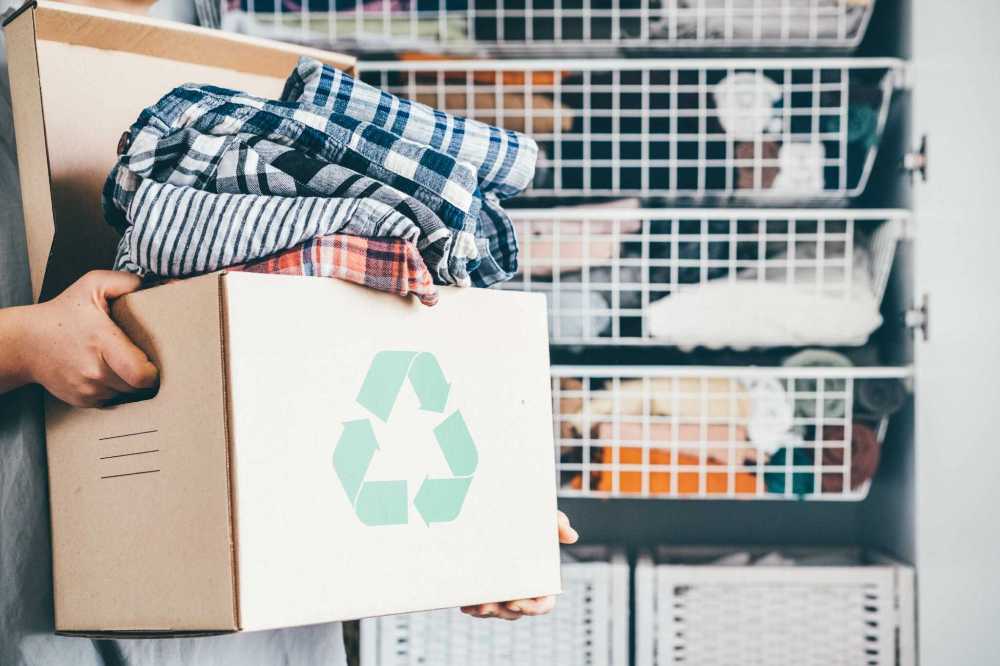

タイトル
ホーム
古着
回収ボックス
仕分け
古着の行き先
リユース
リサイクル
インタビュー
サイトマップ
突然ですが、皆さんはこんなボックスを見たことはありますか？
これは服の回収ボックスです
ここでは、実際に回収ボックスに入れた服の行方を追ってみましょう。
Step 1: 服を投入
Step 2: 業者による回収

Step 3: 集積・運搬
Step 4: リサイクル業者への引き渡し
数字で見る回収の実態
仕分け工程を見る